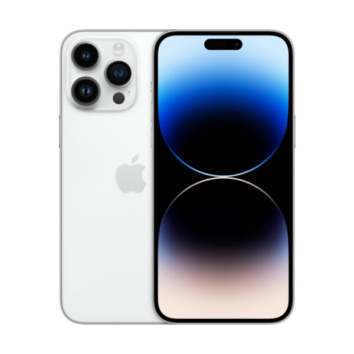

|

|
iPhone 14 Pro Max
€1,969.00
Najnovejši iPhone 14 Pro Max vas bo razveselil z izboljšano trojno kamero na zadnji strani in sprednjo kamero z izjemno visoko ločljivostjo, s katero boste lahko ujeli vsak trenutek svojega življenja v popolni kakovosti. Ne glede na to, ali je svetlo, temno, stojite ali se premikate, boste vedno dobili popoln posnetek. Napredni Smart HDR 4, tehnologija Deep Fusion in snemanje filmske kakovosti Dolby Vision bodo zadovoljili tudi zahtevnejše uporabnike. Popolnoma nova funkcija je Filmski način, ki vam omogoča snemanje neverjetnih posnetkov kot iz vaših najljubših akcijskih filmov zahvaljujoč pametni umetni inteligenci.
Čudovit zaslon OLED Super Retina XDR
Pripravite se na spektakel brez primere. Novi OLED Super Retina XDR zaslon prinaša še nikoli videno gostoto slikovnih pik 460 ppi na telefonih iPhone, zahvaljujoč kateri dobite občutno ostrejšo in podrobnejšo sliko. Poleg tega se lahko zahvaljujoč tehnologiji OLED veselite realističnega barvnega prikaza celotnega barvnega spektra ter popolne črne in svetlejše bele barve. Za popolne podrobnosti predvajane vsebine HDR ima zaslon najvišjo zunanjo svetlost do 2000 nit.
Vrhunska zmogljivost
Absolutni vrh med mobilnimi procesorji. S hitrim in izjemno zmogljivim procesorjem A16 Bionic ne morete zgrešiti, saj gre za najmočnejši procesor na trgu. Zaradi 6-jedrne arhitekture, 5-jedrne grafike, nizke porabe energije in izboljšanega strojnega učenja je ta procesor najboljša izbira.
Zanesljiv ultra hiter 5G internet
iPhone 14 Pro Max za vas bo s podporo 5G navdušil s svojo neverjetno internetno hitrostjo, ki vam bo omogočila prenos, nalaganje, pretakanje in gledanje vsebine v najvišji kakovosti brez nadležnega zamika. Omogoča skoraj takojšen dostop do vaših najljubših vsebin, na primer, celoten film lahko prenesete v nekaj sekundah. Zahvaljujoč pametni postavitvi sprejemnikov signala v ohišju iPhona bo 5G zanesljivejši od konkurenčnih telefonov.
Ključne funkcije
• 6,7-palčni zaslon Super Retina XDR2 s funkcijo Always-On in ProMotion
• Dynamic Island, čaroben nov način interakcije z iPhone
• Glavna kamera z 48 MP za do 4x večjo ločljivost
• Kinematografski način zdaj v 4K Dolby Vision do 30 sličic na sekundo
• Akcijski način za gladke, stabilne ročne videoposnetke
• Bistvena varnostna tehnologija — zaznavanje trkov, pokliče pomoč, ko ne moreš
• Celodnevna življenjska doba baterije in do 29 ur predvajanja videa
• A16 Bionic, ultimativni čip za pametni telefon. Izjemno hitra mobilna mreža 5G
• Vodilne značilnosti vzdržljivosti s keramičnim ščitom in vodoodpornostjo
• iOS 16 ponuja še več načinov za prilagajanje, komuniciranje in skupno rabo
|